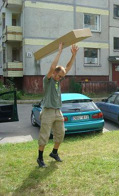

Štai ir pasibaigė Baltijos garsas. Matyt džiaugsmas šiemet
buvo tame, kad žinojom, ko tikėtis, todėl laukėm labiau negu pernai. O kai lauki
lauki tai ir pats festivalis labiau patinka.
Arklio Galia turėjo susitikt prie Big centro bet nesusitiko,
nes gyvenimas nėra tam, kad susitiktum ką nors. Pavyzdžiui, Talandį. Gyvenime
pavyzdžiui nėra tokio Talandžio, kuris skolina palapinę, todėl reik paskui
grįstis į palapines daugiau nei po vieną žmogų. Taigi įgrįžom į mašiną kartoninę
dėžę su gitara viduj, kuri užėmė daugiausia vietos.
Vidas sudaužė iškart.
Ten festivaly tai Sodas vaikšto aplinkui su akiniais, Vilijus vedėjuoja. Taip
baigėsi pirma diena. Antrą dieną buvo tas pats, tik su foreverkais ir LRT įrašų
studija. Talandis žino, ką reiškia LRT (Kitiems: LRT - Lietuvos Radijas Ir
Televizija). Simas nusipaišė ūsus, užsidėjo ant galvos kuoliuką tokį ir sudegino
Vido anglis, šašlykinę, dėžę nuo šašlykinės, groteles, peilį, nu viską, išskyrus
mėsą. Atėjo antra diena. Antros dienos turi savybę ateit ir praeit. Paskui
sudegė kažkieno megztinis, Vidas gavo į veidą, apaugo barzda ir sudaužė gitarą.
Tautvydas tame tarpe. Čipas Džordanas šoko ant scenos, tada pakvietė vienam
šokiui Vidmantą, pirma diena jau ėjo į pabaigą. Atėjo mūsų eilė groti ant
scenos. Buvom patys pirmi ir pagrojom dainas: Čia gimė/M.S.A.š., Čia rimtas/Šunparkis,
Aš tave myliu, Šaras, Aš lochas. Liepė paskui tvarkyt aplinką Sodo būgnininkas,
bet pats susitvarkė. Pasistatėm palapinę ir pasakė mum, kad be dešimt septynios
saundtėkėkas. Pasistatėm palapinę ir pasakė mum, kad be dešimt septynios saundtėkėkas. Maudėmės ežere, muilavomės ir Žilvinas numetė
muilą į žoles, o žoles į muilą. Eimantas nevairavo mašinos. Daug. Antrą dieną
uždraudė valgyt. Tada teko. Buvo toks atvažiavęs programeris iš kažkur tai. Sakė
pas jį minus 6, o jis programuotojas, todėl reik daryt operaciją. Kaune lameriai,
o Vilniuj normaliai.
Pasakojo ką moka jau. Paskui kalbėjo su Holmsu. Mindaugas toks užvažiavo ant
Žilvino ir Vido palapinės. Daugybė žmonių sutilpo į Eimanto mašiną ir sedėjo.
Paskui sekėsi gerai. Vidui Paulius davė į veidą, kitiem pasirodė juokinga.
Lietuva laimėjo krepšinį ir Vido mama lakstė po namus, džiaugėsi, tuo tarpu
Laimonas, Vido pusbrolis, dalyvavo Gruzijos kare, jo draugai atnešė
ir padėjo prie namų netoli tai
skandalas visoj giminėj. Mama vis skambina telefonu visiem, o Eglė nori pasakyt
vieną dalyką. Teklė nusprendė, kad Eglė užnėštėjo, o Eglė, kad ne. Roko muzika
toliau plieskė pažėlusiu rimu. Sodas nuėjo į parduotuvę ir padarė nusipirkau:
pasiskolino daug drabužių savo renginiui. Paruošė naują programą, o mergaitė su
gelėta suknelė, kurios f estivalyje
buvo daug, pilstė sriubą po 2 Lt 93 Cent. Dar buvo kraujuota plika galva su
nuoga merga, kuri lipo ant mašinos, kai važiavom atgal, todėl sunkiai ropštėsi
opelis į kalniuką. Pasimetė kuoliukai pas Eimantą kišenėj. Sudegė vigvamas. Kaip
sakoma, jausmas kūnui, kūnas sielai, siela menui, menas menui. Roko muzika gaudė
dar vis pažėlusiu ritmu ir prasidėjo antra diena. buvo vaidinimas. Tekstas
užvažiavo ant medžių. Kažkas sušuko "Hamletai, aš tavo tėvo šmėkla"
estivalyje
buvo daug, pilstė sriubą po 2 Lt 93 Cent. Dar buvo kraujuota plika galva su
nuoga merga, kuri lipo ant mašinos, kai važiavom atgal, todėl sunkiai ropštėsi
opelis į kalniuką. Pasimetė kuoliukai pas Eimantą kišenėj. Sudegė vigvamas. Kaip
sakoma, jausmas kūnui, kūnas sielai, siela menui, menas menui. Roko muzika gaudė
dar vis pažėlusiu ritmu ir prasidėjo antra diena. buvo vaidinimas. Tekstas
užvažiavo ant medžių. Kažkas sušuko "Hamletai, aš tavo tėvo šmėkla"
ir užgeso šviesos, pasirodė iš
nežinia kur Vilijus su mikrofonu ir pasakojo apie daiktus, kuriuos
kas nors pametė. Atvarė Holmsas toksai. Rokavo. Tada pradėjo
pardavinėti visi bilietus naujus. Po 20 litų, bet žmonės pirko. Atvažiavo
politikai ir uždarinėjo kioskus.
Pagaliau prasidėjo koncertas! Alsavo
scena akinančių ritmu. Atvažiavo Emilis ir pasiliko duotis su
Eimantu. Gyvenimas tęsėsi. Regina suplėšė kelnes. Eimantas toliau nevairavo.
Daug. Tada ėjo į
mašiną ir visą naktį klausėsi muzikos, kalbėjo, Joris rodė savo tatuiruotes,
Kostas rodė tatuiruotes. Donatui rytoj į darbą buvo tai roką pagrojo ir
grįžo. Matematikas. Atvažiavo Elzytės ir vaidino filmus. Tautvydas vėžinosi iš
lauko pusės, taip pat pirko bananą. Arklio Galia per daug skiria dėmesio.
sunkiai, bet grįžom į Vilnių. Ten sutikom Viršuliškėse mergą kur rėkė, bet ji
nesutiko mūsų. Viskam yra savo rybos. Toks Mindaugas pagavo žuvies.
skonio vištienės su meškerę ir nuvertė vėl šašlykinę ant šono, o pelenus ant
mėsos. Vidas netyčia tikrai netyčia paliko kepsninę ten. Ji jau buvo nebe
raudona kepsninė. Misteris Sodas tuo tarpu vaikščiojo. Pakoncertavo Šv. Kipras,
sprogdino foreverkus. Trečią dieną buvo gražu. Ir visa tai, kas yra. Jie pjovė
kojas, dainavo Sodui dainas. Jau atrodė, kad viskas baigėsi, kai pagrojo
paskutinę grupę The Grand, bet ne. Sutikom Algį Kernavėj, jis įkišo pirštą į
butelį
alaus ir sakė "Kunigaikštis Įstrigaila". Groti atėjo rusai su išdžiažytais
veidais, indams nutrūko smuiko styga. Senatvė baigėsi, Chimera susivėlė, Holmsas
vaikščiojo savaime grodamas aplinkui, o roko muzika pleškino per kolonėles.
Dainavo Stipriai Kitaip, Macnai Visaip, ir Čystai Belenkaip Gerbė
tylos minutę Gruzijos karą. Taip ir baigiasi tavo kelias. Jeigu išsibarstė
raidės ne taip, kad Sodo figūra matytųsi gerai,
tai nepykit.
Istorinė akimirka. Mirkt.